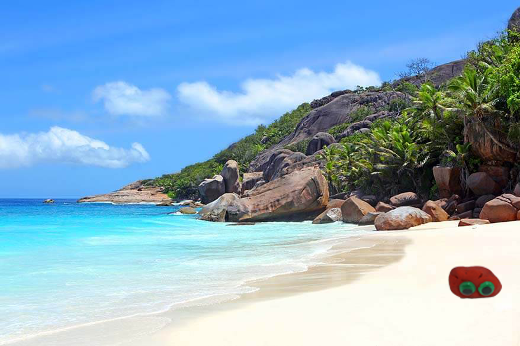
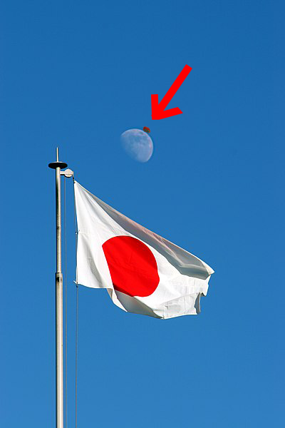
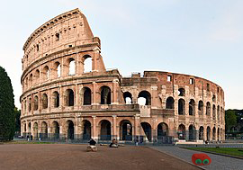
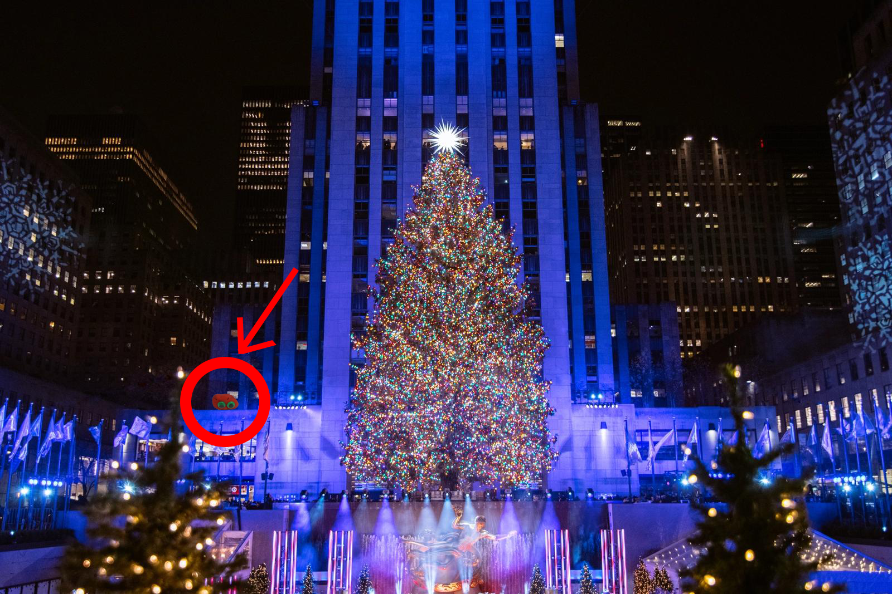

Click to go back
Stonechelles is a small rock that was found on Mahé Island of the Seychelles. Over the years he has been very sunburnt and gives off a red color. Here he is at his favorite beach in the Seychelles:

Stonechelles has been to the moon. He is very adventurous and will never miss a chance to travel. This picture was taken by his friend in Japan: Warning: Independent fact checkers say this claim may be false.

Stonechelles has been to many different famous buildings. His current favorite is the Coliseum in Rome, Italy. There is a small hole in the wall of the Coliseum that Stonechelles can fit perfectly in.

Stonechelles has also been to Peru, where he visited Machu Picchu. It took a long time for him to make it up the mountain to reach it, but the view was worth it. Here he is (in the far back left) in one of the houses in Machu Picchu:

When he's not traveling, Stonechelles can often be found at the gym (maintaining his rock-hard abs) or on a call with his friends playing video games. His favorite games are Team Fortress 2 and Minecraft.

Here Stonechelles is doing his taxes. He doesn't know we took this picture of him. What else can we say about it? Just keep scrolling.

Stonechelles's favorite season is winter. He enjoys the festivity of people during this season. Here he is in front if the Rockefeller Christmas tree in New York City:

Stonechelles also owns a small Italian restaurant in Massachusetts called Sagra. It is very successful and is his main source of income. His favorite dish is the Ziti Della Casa. Ziti in white wine garlic sauce, accompanied by sweet italian sausage, roasted red pepper and broccoli.
Since 2022, Stonechelles has been living in a school, learning more about human culture. Here is a picture taken of him in the background of a picture that wasn't meant to be taken of him: